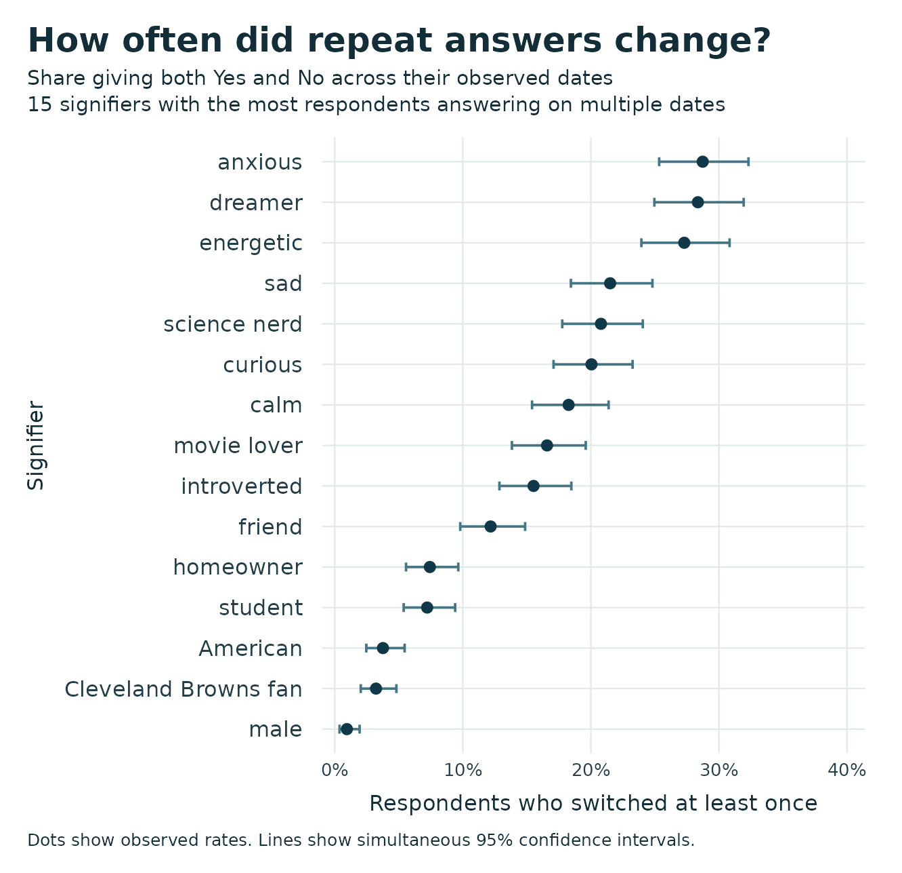

A daily study of the self
Which self-descriptions stayed stable across repeat surveys?

Among the most frequently repeated self-descriptions in Ipseity Daily, male had the steadiest answers. It drew the same answer on every observed date for 99.1% of repeat respondents who answered that item. Cleveland Browns fan and American followed at 96.8% and 96.2% stable. At the other end, anxious had the highest observed switching rate at 28.7%. Dreamer at 28.4% and energetic at 27.3% were close behind.
Following the same person across dates
Ipseity Daily asks samples of American adults whether a word or phrase describes them today. Each word or phrase is called a signifier. The snapshot spans July 8, 2025, through November 21, 2026. It contains 796,390 answers from 5,476 distinct respondents across 10,197 respondent-days. A respondent-day counts a person's survey date once, even if they answered about many signifiers that day.
To measure stability, we followed each person's answers about each signifier separately. A person had to answer about the same signifier on at least two distinct dates to count for that item. A pair was stable if every observed answer was Yes or every observed answer was No. It counted as switching if both answers appeared at least once. This gives each person equal weight for a given signifier, whether they answered about it on two dates or many. A missing answer can reflect a skipped question or a different set of assigned items, so the calculation uses only recorded answers.
We defined frequently asked signifiers as the 15 with the largest numbers of respondents who met that repeat-answer rule. Together they accounted for 25,210 eligible respondent–signifier pairs, with 94,501 answers across 6,424 respondent-days from 1,703 distinct respondents. A person could contribute to several signifiers and still counts only once in the overall respondent total.
Reading the differences
In the chart, each dot marks the share who gave both Yes and No for that signifier. Farther right means more people switched at least once. The lines are 95% confidence intervals adjusted for looking at several signifiers and both ways of measuring switching together. Each estimate uses a single outcome per respondent for that item. The adjustment allows the same people to contribute to several estimates.
For anxious, 485 of 1,688 eligible respondents gave both answers, with an interval of 25.3% to 32.3%. For male, 16 of 1,689 did so, with an interval of 0.4% to 1.9%. The chart shows a wide gap between the most and least stable items. The intervals for anxious, dreamer, and energetic overlap considerably, so their exact order is best read as a description of this snapshot.
Two signifiers can look similarly stable for different reasons. For American, 1,597 of 1,674 respondents always said Yes. For Cleveland Browns fan, 1,586 of 1,676 always said No. Both items had little switching, even though the typical answer went in opposite directions. Stability tells us how consistently someone answered, while the mix of Yes and No tells us how often people applied the label to themselves.
Giving every respondent one chance to switch
Someone who answered on more dates had more opportunities to register a change. We checked how much that mattered by using just the first two observed answers for every eligible pair. This gave everyone one comparison per signifier. Depending on the item, the median gap between those answers was 38 or 39 days.
With that rule, anxious still led at 21.3%, followed by energetic at 20.3% and dreamer at 19.9%. Male, Cleveland Browns fan, and American still had the lowest switching rates, in that order. The comparison covers a different stretch of time for each person, so it tells us about the chance of a different answer on the next observed date, given the gaps in this survey.
What the survey can tell us
The question asks what describes a person today. A changed answer could reflect a passing feeling, a change in circumstances, or a different reading of the word on a later date. Changes can also happen between survey dates and go unobserved. Which people count for each item depends on the survey sets they received, which questions they answered, and who returned. The snapshot also ends while some respondents may still be participating, leaving any future switches outside the observation window.
The analysis retained valid responses even when demographic information was missing. It describes repeat participants who received and answered the same frequently asked signifiers. The intervals account for sampling uncertainty among respondents under an independence assumption within each item. Wider conclusions about U.S. adults would require a sampling design that supports that inference.
Read the complete R analysis
#!/usr/bin/env Rscript
suppressPackageStartupMessages({
library(scales)
library(tidyverse)
})
data_path <- Sys.getenv("IPSEITY_DATA_PATH", "data/ipseity.csv.gz")
expected_columns <- c(
"endorsed", "signifier", "observation_date", "hashed_respondent_id",
"demographics_status", "age", "sex", "ethnicity", "birth_country",
"residence_country", "nationality", "language", "student", "employment",
"time_on_task", "approvals"
)
snapshot <- suppressWarnings(read_csv(
data_path,
col_types = cols(
.default = col_character(), endorsed = col_integer(), age = col_double(),
observation_date = col_date(format = "%Y-%m-%d")
),
na = c("", "NA"), trim_ws = FALSE, progress = FALSE, name_repair = "minimal"
))
stopifnot(
"Unexpected canonical CSV schema or parse failure" =
identical(names(snapshot), expected_columns) && nrow(problems(snapshot)) == 0L,
"Unexpected response or respondent key" =
all(snapshot$endorsed %in% 0:1) &&
all(!is.na(snapshot$observation_date)) &&
all(!is.na(snapshot$signifier) & nzchar(str_trim(snapshot$signifier))) &&
isTRUE(all(str_detect(snapshot$hashed_respondent_id, "^[0-9a-fA-F]{12}$"))),
"Unexpected snapshot coverage" =
nrow(snapshot) == 796390L && max(snapshot$observation_date) == as.Date("2026-11-21"),
"Unexpected demographics status" =
all(snapshot$demographics_status %in% c("available", "consent_revoked", "data_expired")),
"Revoked demographic information is present" =
all(is.na(filter(snapshot, demographics_status == "consent_revoked") |> select(age:employment)))
)
responses <- snapshot |>
select(hashed_respondent_id, observation_date, signifier, endorsed)
stopifnot(
"Duplicate canonical respondent/date/signifier key" =
anyDuplicated(select(responses, -endorsed)) == 0L
)
# The canonical key makes every observation in a pair a distinct date.
pair_history <- responses |>
group_by(hashed_respondent_id, signifier) |>
filter(n() >= 2L) |>
arrange(observation_date, .by_group = TRUE) |>
summarise(
dates = n(),
yes = sum(endorsed),
first_two_switch = first(endorsed) != nth(endorsed, 2L),
first_gap_days = as.integer(nth(observation_date, 2L) - first(observation_date)),
.groups = "drop"
)
# Apply coverage criteria before using any Yes/No outcomes to rank the items.
frequent_count <- 15L
frequent <- pair_history |>
group_by(signifier) |>
summarise(
respondents = n(),
observations = sum(dates),
exactly_two_dates = sum(dates == 2L),
median_first_gap_days = median(first_gap_days),
always_yes = sum(yes == dates),
always_no = sum(yes == 0L),
ever_switched = sum(yes > 0L & yes < dates),
first_two_switched = sum(first_two_switch),
.groups = "drop"
) |>
filter(observations >= 50L, respondents >= 20L) |>
arrange(desc(respondents), signifier, .locale = "C") |>
slice_head(n = frequent_count)
stopifnot(
"Insufficient frequent signifiers" = nrow(frequent) == frequent_count,
"Public signifier label contains an identifier or a control character" =
!any(str_detect(frequent$signifier, "[[:cntrl:]]|@|\\b[0-9a-fA-F]{12}\\b")),
"Inconsistent respondent classifications" =
all(frequent$always_yes + frequent$always_no + frequent$ever_switched == frequent$respondents) &&
all(frequent$first_two_switched <= frequent$ever_switched)
)
# Each item has one Bernoulli outcome per respondent for each definition.
# Exact binomial intervals with a Bonferroni adjustment cover the family
# without assuming independence across items or between the two definitions.
confidence <- 0.95
interval_count <- 2L * nrow(frequent)
tail_probability <- (1 - confidence) / (2 * interval_count)
binomial_interval <- function(count, total) {
tibble(
rate = count / total,
low = if_else(
count == 0L, 0, qbeta(tail_probability, pmax(count, 1L), total - count + 1L)
),
high = if_else(
count == total, 1, qbeta(1 - tail_probability, count + 1L, pmax(total - count, 1L))
)
)
}
ranked <- frequent |>
mutate(
ever = binomial_interval(ever_switched, respondents),
first_two = binomial_interval(first_two_switched, respondents)
) |>
unpack(c(ever, first_two), names_sep = "_") |>
mutate(
ever_rank = min_rank(desc(ever_rate)),
first_two_rank = min_rank(desc(first_two_rate))
) |>
arrange(ever_rank, signifier, .locale = "C")
eligible_responses <- responses |>
semi_join(pair_history, by = c("hashed_respondent_id", "signifier"))
sample_counts <- function(data, scope) {
summarise(
data,
scope = scope,
observations = n(),
respondent_days = n_distinct(hashed_respondent_id, observation_date),
respondents = n_distinct(hashed_respondent_id),
observation_dates = n_distinct(observation_date),
signifiers = n_distinct(signifier)
)
}
coverage <- bind_rows(
sample_counts(responses, "Full snapshot"),
sample_counts(eligible_responses, "All eligible respondent-signifier pairs"),
sample_counts(
filter(eligible_responses, signifier %in% frequent$signifier),
"Eligible pairs for ranked signifiers"
)
)
percent <- function(rate) sprintf("%.1f", 100 * rate)
ever_results <- ranked |>
transmute(
rank = ever_rank, signifier, respondents, observations, ever_switched,
always_yes, always_no, switch_pct = percent(ever_rate),
switch_low_pct = percent(ever_low), switch_high_pct = percent(ever_high),
stable_pct = percent(1 - ever_rate),
stable_low_pct = percent(1 - ever_high), stable_high_pct = percent(1 - ever_low)
)
first_two_results <- ranked |>
arrange(first_two_rank, signifier, .locale = "C") |>
transmute(
rank = first_two_rank, signifier, first_two_switched, exactly_two_dates,
median_first_gap_days, switch_pct = percent(first_two_rate),
switch_low_pct = percent(first_two_low), switch_high_pct = percent(first_two_high)
)
writeLines(
c(
"Ipseity Daily | Repeat answers to frequent signifiers",
sprintf("Snapshot spans %s through %s.", min(responses$observation_date), max(responses$observation_date)),
"A pair was eligible when the same respondent answered the same signifier on at least two distinct dates.",
sprintf("Rankings cover the %d signifiers with the most eligible respondents. Ties at the cutoff use alphabetical order.",
frequent_count),
"A pair switched if both a Yes and a No were observed. A pair was stable if all observed answers agreed.",
"The first-two measure compares the first and second observed answers for the pair.",
sprintf("Exact binomial confidence intervals target %.0f%% simultaneous coverage across %d switching estimates.",
100 * confidence, interval_count),
"",
trimws(format_tsv(coverage)),
sprintf("The full snapshot contained %d eligible respondent-signifier pairs.", nrow(pair_history)),
sprintf("The ranked signifiers accounted for %d eligible respondent-signifier pairs.", sum(frequent$respondents)),
"",
"Switching across all observed dates (highest rate first)",
trimws(format_tsv(ever_results)),
"",
"Switching from the first to the second observed answer (highest rate first)",
trimws(format_tsv(first_two_results))
),
"results.txt"
)
plot_data <- ranked |>
mutate(signifier = factor(signifier, levels = rev(signifier)))
figure <- ggplot(plot_data, aes(x = ever_rate, y = signifier)) +
geom_errorbarh(aes(xmin = ever_low, xmax = ever_high), height = 0.22,
linewidth = 0.7, colour = "#467586") +
geom_point(size = 2.7, colour = "#103848") +
scale_x_continuous(
labels = label_percent(accuracy = 1),
breaks = breaks_width(0.10),
limits = c(0, ceiling(10 * max(plot_data$ever_high)) / 10),
expand = expansion(mult = c(0.025, 0.035))
) +
labs(
title = "How often did repeat answers change?",
subtitle = "Share giving both Yes and No across their observed dates\n15 signifiers with the most respondents answering on multiple dates",
x = "Respondents who switched at least once",
y = "Signifier",
caption = "Dots show observed rates. Lines show simultaneous 95% confidence intervals."
) +
theme_minimal(base_size = 13) +
theme(
text = element_text(colour = "#132E38"),
plot.title.position = "plot",
plot.caption.position = "plot",
plot.title = element_text(face = "bold", size = 20, margin = margin(b = 7)),
plot.subtitle = element_text(size = 12, lineheight = 1.08, margin = margin(b = 13)),
axis.text = element_text(colour = "#233E48"),
axis.text.y = element_text(size = 13, margin = margin(r = 8)),
axis.title.x = element_text(margin = margin(t = 9)),
axis.title.y = element_text(margin = margin(r = 10)),
panel.grid.major = element_line(colour = "#DFE8EA", linewidth = 0.4),
panel.grid.minor = element_blank(),
plot.caption = element_text(hjust = 0, size = 10, margin = margin(t = 11)),
plot.margin = margin(16, 22, 14, 16)
)
ggsave("visualization.png", figure, width = 7.4, height = 7.15, dpi = 180, bg = "white")
Original research prompt
Among repeat participants, which frequently asked signifiers show the greatest within-person stability, and which show the most switching, counting only respondent–signifier pairs observed on multiple dates?
Dataset SHA-256: 3b67ac4f9103b2685c5ee1e43b0189b240b29639b8337490beee21b5181bec6b